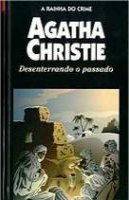

Desenterrando o Passado
Come, Tell Me How You Live
Este livro nasceu do casamento de Agatha Christie com seu segundo marido, o jovem e brilhante arqueólogo Max Mallowan. Ao seu lado, a escritora percorreu todo o Oriente Médio. Desenterrando o passado é resultado de suas observações dos fatos ocorridos em quatro expedições arqueológicas à Síria e ao Iraque — sempre usando e abusando do típico senso de humor inglês. Agatha Christie jamais se limitou a ser uma espectadora aguda e privilegiada dos fatos: colaborou com prazer em todas as tarefas do seu marido. Afinal, um arqueólogo, de certa forma, não deixa de ser um detetive dedicado a desenterrar e solucionar os enigmas de um passado distante.
Ao narrar os fatos reais, a Sra. Christie Mallowan utiliza as suas habilidades de romancista para tornar extremamente interessantes os acontecimentos cotidianos, os lugares exóticos e os personagens inusitados que cercavam o casal. Com a grande virtude de não se levar a sério todo o tempo, Agatha Christie mostra que sabe rir, com uma ironia generosa, de tudo e de todos. Principalmente de si.